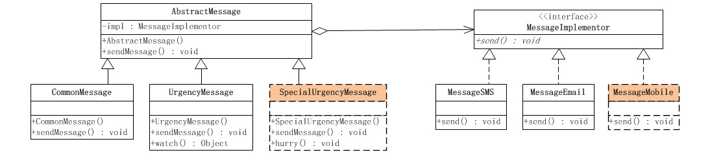

# 使用场景
考虑这样一个实际的业务功能：发送提示消息。基本上所有带业务流程处理的系统都会有这样的功能，比如 OA 上有尚未处理完毕的文件，需要发送一条消息提示他。
从业务上看，消息又分成普通消息、加急消息和特急消息多种，不同的消息类型，业务功能处理是不一样的，比如加急消息是在消息上添加加急，而特急消息除了添加特急外，还会做一条催促的记录，多久不完成会继续催促；从发送消息的手段上看，又有系统内短消息、手机短信息、邮件等。
# 不使用模式的解决方案
# 实现发送普通消息
先考虑实现一个简单点的版本，比如，消息只是实现发送普通消息，发送的方式只实现系统内短消息和邮件。其他的功能，等这个版本完成后，再继续添加。
# 源代码
🎈 消息的统一接口
public interface Message { | |
/** | |
* 发送消息 | |
* @param message 要发送消息的内容 | |
* @param toUser 消息的接受者 | |
*/ | |
public void send(String message , String toUser); | |
} |
✨ 系统内短消息示例类
public class CommonMessageSMS implements Message { | |
@Override | |
public void send(String message, String toUser) { | |
System.out.println("使用系统内短消息的方法，发送消息'"+message+"'给"+toUser); | |
} | |
} |
🎀 邮件消息示例类
public class CommonMessageEmail implements Message{ | |
@Override | |
public void send(String message, String toUser) { | |
System.out.println("使用邮件短消息的方法，发送消息'"+message+"'给"+toUser); | |
} | |
} |
# 实现发送加急消息
发送加急消息同样有两种方式，系统内短消息和邮件方式。但是加急消息的实现不同于普通消息，加急消息会自动在消息上添加加急，然后在再发送消息；另外加急消息会提供监控的方法，让客户端可以随时通过这个方法来了解对于加急消息的处理进度。比如，相应的人员是否接收到这个信息，相应的处理工作是否已经展开。因此加急消息需要扩展出一个新的接口，除了基本的发送消息的功能，还需要添加监控功能。
# 源代码
👓 加急消息的接口
public interface UrgencyMessage extends Message { | |
/** | |
* 监控指定消息的处理过程 | |
* @param messageId 被监控的消息编号 | |
* @return 监控到的消息的处理状态 | |
*/ | |
public Object watch(String messageId); | |
} |
🎊 系统内加急短消息示例类
public class UrgencyMessageSMS implements UrgencyMessage { | |
@Override | |
public Object watch(String messageId) { | |
// 根据消息 id 获取消息的状态，组织成监控的数据对象，然后返回 | |
return null; | |
} | |
@Override | |
public void send(String message, String toUser) { | |
message = "加急：" + message; | |
System.out.println("使用系统内短消息的方法，发送消息'"+message+"'给"+toUser); | |
} | |
} |
🎃 邮件加急短消息示例类
public class UrgencyMessageEmail implements UrgencyMessage { | |
@Override | |
public Object watch(String messageId) { | |
// 根据消息 id 获取消息的状态，组织成监控的数据对象，然后返回 | |
return null; | |
} | |
@Override | |
public void send(String message, String toUser) { | |
message = "加急：" + message; | |
System.out.println("使用邮件短消息的方法，发送消息'"+message+"'给"+toUser); | |
} | |
} |
# 实现发送特急消息
特急消息不需要查看处理进程，只有没有完成，就直接催促，也就是说，对于特急消息，在普通消息的处理基础上，需要添加催促的功能。
观察上面的系统结构图，会发现一个很明显的问题，那就是通过这种继承的方式来扩展消息处理，会非常不方便。实现加急消息处理的时候，必须实现系统内短消息和邮件两种处理方式，因为业务处理可能不同，在实现特急消息处理的时候，又必须实现系统内短信息和邮件两种处理方式。这意味着，以后每次扩展一下消息处理，都必须要实现这两种处理方式，这还不算完，如果要添加新的实现方式呢？
# 添加发送手机消息的处理方式
如果要添加一种新的发送消息的方式，是需要在每一种抽象的具体实现中，都添加发送手机消息的处理的。也就是说，发送普通消息、加急消息和特急消息的处理，都可以通过手机来发送。
采用通过继承来扩展的实现方式，有个明显的缺点，扩展消息的种类不太容易。不同种类的消息具有不同的业务，也就是有不同的实现，在这种情况下，每一种类的消息，需要实现所有不同的消息发送方式。更可怕的是，如果要新加入一种消息的发送方式，那么会要求所有的消息种类都有加入这种新的发送方式的实现。
那么究竟该如何才能既实现功能，又可以灵活地扩展呢？
# 使用桥梁模式来解决问题
根据业务的功能要求，业务的变化具有两个维度，一个维度是抽象的消息，包括普通消息、加急消息和特急消息，这几个抽象的消息本身就具有一定的关系，加急消息和特急消息会扩展普通消息；另一个维度是在具体的消息发送方式上，包括系统内短消息、邮件和手机短消息，这几个方式是平等的，可被切换的方式。
现在出现问题的根本原因，就在于消息的抽象和实现是混杂在一起的，这就导致了一个纬度的变化会引起另一个纬度进行相应的变化，从而使得程序扩展起来非常困难。
要想解决这个问题，就必须把这两个纬度分开，也就是将抽象部分和实现部分分开，让它们相互独立，这样就可以实现独立的变化，使扩展变得简单。抽象部分就是各个消息的类型所对应的功能，而实现部分就是各种发送消息的方式。按照桥梁模式的结构，给抽象部分和实现部分分别定义接口，然后分别实现它们就可以了。

# 源代码
🎪 抽象消息类
public abstract class AbstractMessage { | |
// 持有一个实现部分的对象 | |
MessageImplementor impl; | |
/** | |
* 构造方法，传入实现部分的对象 | |
* @param impl 实现部分的对象 | |
*/ | |
public AbstractMessage(MessageImplementor impl){ | |
this.impl = impl; | |
} | |
/** | |
* 发送消息，委派给实现部分的方法 | |
* @param message 要发送消息的内容 | |
* @param toUser 消息的接受者 | |
*/ | |
public void sendMessage(String message , String toUser){ | |
this.impl.send(message, toUser); | |
} | |
} |
🎎 普通消息类
public class CommonMessage extends AbstractMessage { | |
public CommonMessage(MessageImplementor impl) { | |
super(impl); | |
} | |
@Override | |
public void sendMessage(String message, String toUser) { | |
// 对于普通消息，直接调用父类方法，发送消息即可 | |
super.sendMessage(message, toUser); | |
} | |
} |
🎊 加急消息类
public class UrgencyMessage extends AbstractMessage { | |
public UrgencyMessage(MessageImplementor impl) { | |
super(impl); | |
} | |
@Override | |
public void sendMessage(String message, String toUser) { | |
message = "加急：" + message; | |
super.sendMessage(message, toUser); | |
} | |
/** | |
* 扩展自己的新功能，监控某消息的处理状态 | |
* @param messageId 被监控的消息编号 | |
* @return 监控到的消息的处理状态 | |
*/ | |
public Object watch(String messageId) { | |
// 根据消息 id 获取消息的状态，组织成监控的数据对象，然后返回 | |
return null; | |
} | |
} |
🖼 实现发送消息的统一接口
public interface MessageImplementor { | |
/** | |
* 发送消息 | |
* @param message 要发送消息的内容 | |
* @param toUser 消息的接受者 | |
*/ | |
public void send(String message , String toUser); | |
} |
🎢 系统内短消息的实现类
public class MessageSMS implements MessageImplementor { | |
@Override | |
public void send(String message, String toUser) { | |
System.out.println("使用系统内短消息的方法，发送消息'"+message+"'给"+toUser); | |
} | |
} |
🎟 邮件短消息的实现类
public class MessageEmail implements MessageImplementor { | |
@Override | |
public void send(String message, String toUser) { | |
System.out.println("使用邮件短消息的方法，发送消息'"+message+"'给"+toUser); | |
} | |
} |
🎫 客户端类
public class Client { | |
public static void main(String[] args) { | |
// 创建具体的实现对象 | |
MessageImplementor impl = new MessageSMS(); | |
// 创建普通消息对象 | |
AbstractMessage message = new CommonMessage(impl); | |
message.sendMessage("加班申请速批","李总"); | |
// 将实现方式切换成邮件，再次发送 | |
impl = new MessageEmail(); | |
// 创建加急消息对象 | |
message = new UrgencyMessage(impl); | |
message.sendMessage("加班申请速批","李总"); | |
} | |
} |
观察上面的例子会发现，采用桥梁模式来实现，抽象部分和实现部分分离开了，可以相互独立的变化，而不会相互影响。因此在抽象部分添加新的消息处理（特急消息），对发送消息的实现部分是没有影响的；反过来增加发送消息的方式（手机短消息），对消息处理部分也是没有影响的。
# 桥梁模式的优点
● 分离抽象和实现部分
桥梁模式分离了抽象部分和实现部分，从而极大地提供了系统的灵活性。让抽象部分和实现部分独立出来，分别定义接口，这有助于对系统进行分层，从而产生更好的结构化的系统。
● 更好的扩展性
桥梁模式使得抽象部分和实现部分可以分别独立地扩展，而不会相互影响，从而大大提高了系统的可扩展性。
# 桥梁模式在 Java 中的使用
桥梁模式在 Java 应用中的一个非常典型的例子就是 JDBC 驱动器。JDBC 为所有的关系型数据库提供一个通用的界面。一个应用系统动态地选择一个合适的驱动器，然后通过驱动器向数据库引擎发出指令。这个过程就是将抽象角色的行为委派给实现角色的过程。
抽象角色可以针对任何数据库引擎发出查询指令，因为抽象角色并不直接与数据库引擎打交道，JDBC 驱动器负责这个底层的工作。由于 JDBC 驱动器的存在，应用系统可以不依赖于数据库引擎的细节而独立地演化；同时数据库引擎也可以独立于应用系统的细节而独立的演化。两个独立的等级结构如下图所示，左边是 JDBC API 的等级结构，右边是 JDBC 驱动器的等级结构。应用程序是建立在 JDBC API 的基础之上的。
应用系统作为一个等级结构，与 JDBC 驱动器这个等级结构是相对独立的，它们之间没有静态的强关联。应用系统通过委派与 JDBC 驱动器相互作用，这是一个桥梁模式的例子。
JDBC 的这种架构，把抽象部分和具体部分分离开来，从而使得抽象部分和具体部分都可以独立地扩展。对于应用程序而言，只要选用不同的驱动，就可以让程序操作不同的数据库，而无需更改应用程序，从而实现在不同的数据库上移植；对于驱动程序而言，为数据库实现不同的驱动程序，并不会影响应用程序。